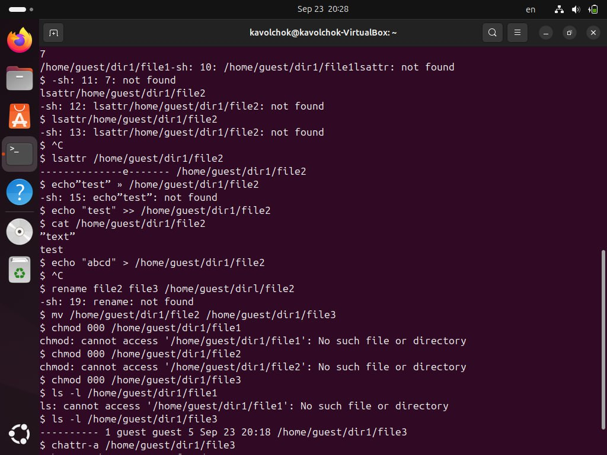

Цель данной лабораторной работы — изучить работу с утилитой Hydra для
подбора имени пользователя и пароля на примере сервиса, работающего
через HTTP, и продемонстрировать процесс использования метода подбора
данных для авторизации через HTML-форму.
2 Задание
В рамках работы необходимо использовать утилиту Hydra для подбора
пароля к HTML-форме авторизации, отправляющей данные методом POST.
Требуется подобрать пароль для пользователя root с помощью словаря
паролей и получить результат успешного подбора
3 Теоретическое введение
Hydra — это мощная утилита для автоматизированного подбора паролей и
имен пользователей, часто используемая для тестирования на проникновение
и проверки безопасности различных сервисов. Основная задача Hydra —
взлом или подбор учетных данных через атаку методом “грубой силы”
(brute-force). Этот метод заключается в систематическом переборе всех
возможных комбинаций логинов и паролей из заданного списка, до тех пор,
пока не будет найдено правильное сочетание.
Hydra поддерживает большое количество различных сетевых протоколов,
таких как HTTP, FTP, SSH, Telnet, SMB, VNC, и многих других. Это делает
его универсальным инструментом для проверки безопасности систем.
Благодаря возможности работы с различными типами авторизации, Hydra
находит широкое применение для тестирования веб-форм, сетевых служб, а
также локальных сервисов.
Одним из главных преимуществ Hydra является её гибкость при настройке
под разные условия. Например, при работе с веб-формами она может
поддерживать как GET, так и POST-запросы, а также обрабатывать сложные
сценарии авторизации с использованием куки, сессий и многократных
перенаправлений.
Основные компоненты работы Hydra: 1. Логины
и пароли: Hydra использует списки возможных логинов и паролей
(файлы словарей) для автоматизированного подбора. Эти файлы могут
содержать как наиболее распространённые пароли, так и специально
подготовленные под конкретную задачу комбинации. 2.
Протоколы: Hydra поддерживает множество сетевых
протоколов для работы с различными сервисами, такими как SSH, FTP, HTTP
и т.д. В случае с веб-сайтами часто используется протокол HTTP с методом
POST, через который передаются данные формы авторизации. 3.
Анализ ответа сервера: Hydra не только отправляет
запросы с комбинациями логинов и паролей, но и анализирует ответы
сервера для определения успеха или провала аутентификации. Например,
если сервер возвращает сообщение о неправильных учетных данных, это
будет сигналом для продолжения подбора. 4. Остановка при
успешной попытке: Hydra позволяет остановить процесс подбора,
как только найдена первая правильная комбинация логина и пароля, что
экономит время и ресурсы при тестировании.
Веб-форумы и системы управления доступом часто становятся целями атак
злоумышленников. Поэтому утилита Hydra особенно полезна для тестирования
безопасности веб-приложений, обеспечивая возможность проверки
устойчивости систем к подбору паролей.
4 Выполнение лабораторной
работы
Исходные данные: - IP сервера:
178.72.90.181 - Сервис: HTTP на стандартном 80 порту -
Адрес авторизации: /cgi-bin/luci - Метод отправки данных:
POST - Логин: root - Словарь паролей:
~/pass_lists/dedik_passes.txt - Сообщение об ошибке
аутентификации:
Invalid username and/or password! Please try again.
Шаги выполнения:
Установка Hydra
Я начала работу с установки Hydra на свою систему. Для этого выполнила
команду: ```bash sudo apt-get install hydra
Установка Hydra
Установка прошла успешно, и я смогла перейти к следующему
этапу.
Подготовка словаря паролей Далее я убедилась,
что у меня есть словарь паролей, который я буду использовать для
подбора. Этот словарь паролей расположен по пути
~/pass_lists/dedik_passes.txt. Я заранее проверила его содержимое, чтобы
убедиться, что там действительно есть подходящие пароли для
перебора.
Подготовка словаря паролей
Формирование команды для Hydra Так как форма
авторизации на сайте использует метод POST для передачи данных, я
выбрала модуль http-post-form. Для корректной работы Hydra я
сформировала следующую команду: hydra -l root -P
~/pass_lists/dedik_passes.txt -o ./hydra_result.log -f -V -s 80
178.72.90.181 http-post-form
“/cgi-bin/luci:username=USER&password=PASS:Invalid
username”

Формирование команды для
Hydra
Я внимательно разобрала команду:
Указала логин, который буду использовать для подбора пароля (-l
root).
Указала путь к файлу со словарем паролей (-P
~/pass_lists/dedik_passes.txt).
Настроила вывод результатов в файл (-o ./hydra_result.log).
Добавила флаг для завершения работы после нахождения первого
правильного пароля (-f).
Включила подробный вывод в терминал для отслеживания процесса
(-V).
Задала порт для подключения (80, так как это HTTP).
Указала модуль для работы с POST-запросами (http-post-form).
Прописала путь к форме авторизации и параметры, необходимые для
работы.
Запуск Hydra Я запустила Hydra с подготовленной
командой. Программа начала процесс подбора паролей, последовательно
отправляя запросы с различными комбинациями из словаря. Каждый запрос и
результат отображались в терминале, что помогало отслеживать
прогресс.
Запуск Hydra
После некоторого времени Hydra завершила свою работу, найдя
правильный пароль. В результате программа вывела информацию на экран и
записала ее в лог-файл hydra_result.log.
5 Выводы
В ходе работы был продемонстрирован процесс подбора пароля с
использованием Hydra для авторизации через HTML-форму с POST-запросом.
Утилита показала свою эффективность в автоматизированном подборе
паролей.